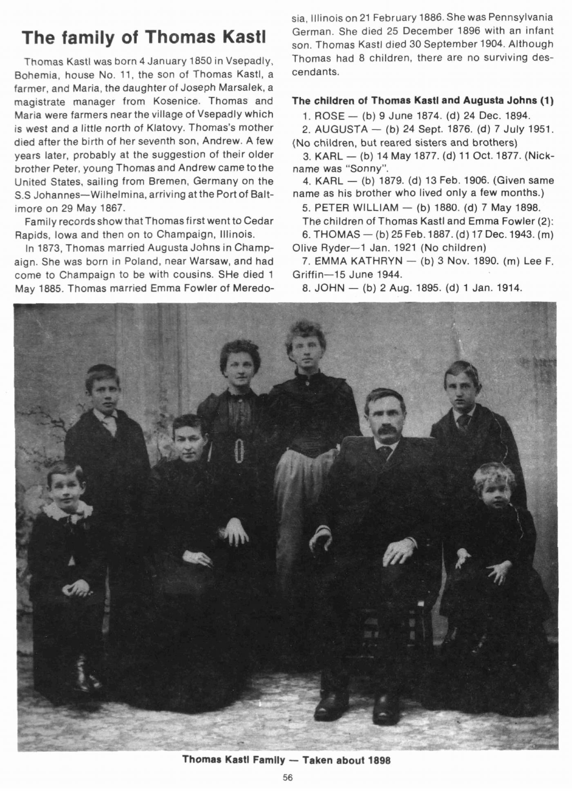
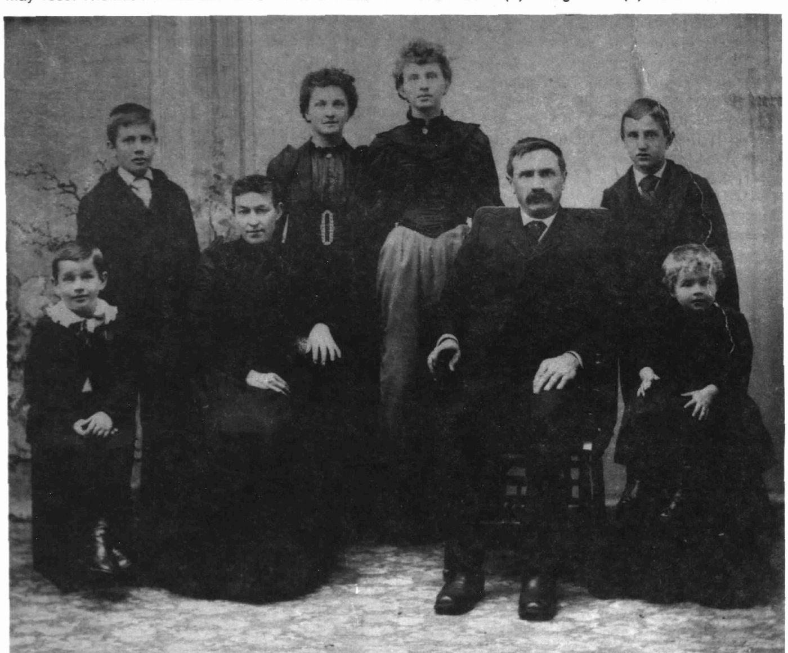

The book · The Family of Thomas Kastl
Page 56 The family of Thomas Kastl


Transcription
The family of Thomas Kastl
Thomas Kastl was born 4 January 1850 in Vsepadly, Bohemia, house No. 11, the son of Thomas Kastl, a farmer, and Maria, the daughter of Joseph Marsalek, a magistrate manager from Kosenice. Thomas and Maria were farmers near the village of Vsepadly which is west and a little north of Klatovy. Thomas's mother died after the birth of her seventh son, Andrew. A few years later, probably at the suggestion of their older brother Peter, young Thomas and Andrew came to the United States, sailing from Bremen, Germany on the S.S Johannes—Wilhelmina, arriving at the Port of Baltimore on 29 May 1867.
Family records show that Thomas first went to Cedar Rapids, Iowa and then on to Champaign, Illinois.
In 1873, Thomas married Augusta Johns in Champaign. She was born in Poland, near Warsaw, and had come to Champaign to be with cousins. SHe died 1 May 1885. Thomas married Emma Fowler of Meredosia, Illinois on 21 February 1886. She was Pennsylvania German. She died 25 December 1896 with an infant son. Thomas Kastl died 30 September 1904. Although Thomas had 8 children, there are no surviving descendants.
The children of Thomas Kastl and Augusta Johns (1)
- ROSE — (b) 9 June 1874. (d) 24 Dec. 1894.
- AUGUSTA — (b) 24 Sept. 1876. (d) 7 July 1951. (No children, but reared sisters and brothers)
- KARL — (b) 14 May 1877. (d) 11 Oct. 1877. (Nickname was "Sonny".
- KARL — (b) 1879. (d) 13 Feb. 1906. (Given same name as his brother who lived only a few months.)
- PETER WILLIAM — (b) 1880. (d) 7 May 1898.
The children of Thomas Kastl and Emma Fowler (2):
- THOMAS — (b) 25 Feb. 1887. (d) 17 Dec. 1943. (m) Olive Ryder—1 Jan. 1921 (No children)
- EMMA KATHRYN — (b) 3 Nov. 1890. (m) Lee F. Griffin—15 June 1944.
- JOHN — (b) 2 Aug. 1895. (d) 1 Jan. 1914.


People from the line of descent on this page
- Thomas Kastl 1850–1904
Transcriber’s notes
Begins a new chapter-style section (large title). Child numbering runs continuously 1-8 across both marriages; the second sub-list label 'The children of Thomas Kastl and Emma Fowler (2):' is in regular (not bold) type. Item 3 KARL has an unclosed parenthesis '(Nickname was "Sonny".' as printed. 'SHe died' capitalization and 'S.S Johannes—Wilhelmina' as printed.